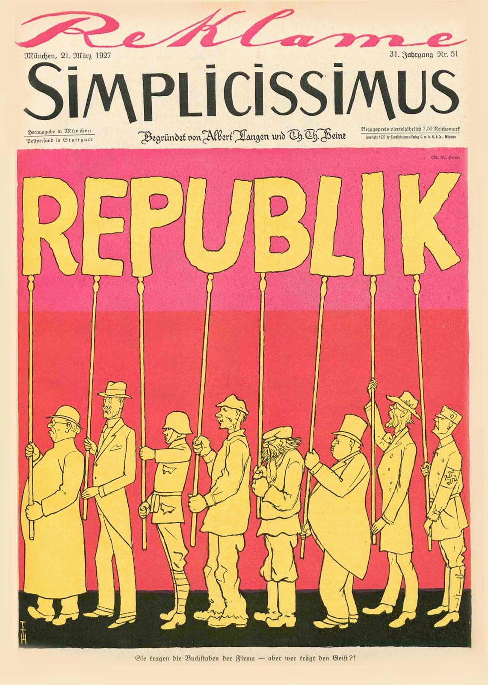
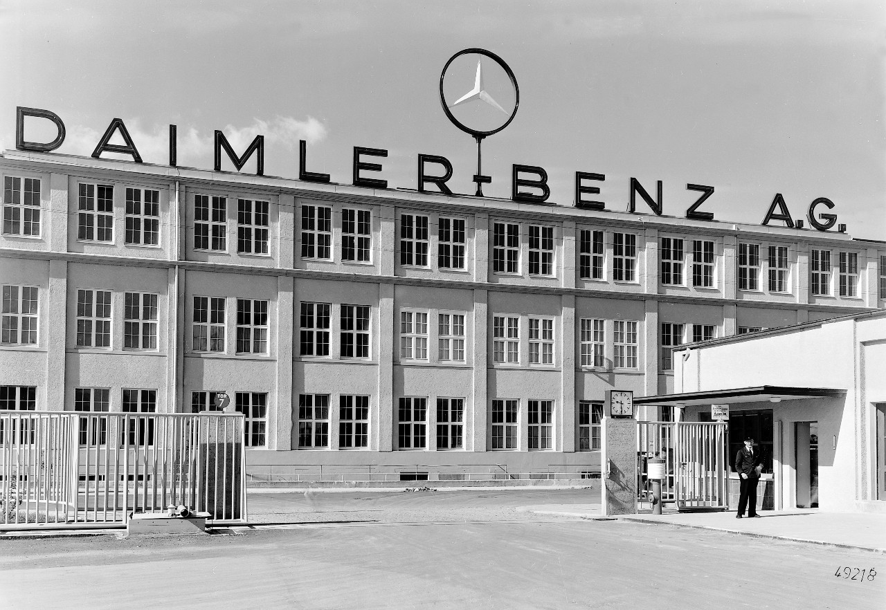

Gebietsverluste (alle Kolonien, 13% des Territoriums - beinhaltet -
10% der Bevölkerung,
50% Eisenerzversorgung,
25% Steinkohleförderung,
17% der Kartoffelernte,
13% Weizenernte)
Souveränitätsbeschränkungen
Reparationen
erstmals im Mai 1921 auf internationaler Konferenz ausgehandelt, dass das Deutsche Reich insgesamt Reparationszahlungen von 132 Milliarden Mark bezahlen muss
wenn der Vorschlag nicht angenommen wurde, drohte eine sofortige besetzung des Rheinlands
Reichskanzler Joseph Wirth hatte keine Alternative als anzunehmen
in Folgezeit bemühte sich das Kabinett, die Reparationszahlungen zu erfüllen
Zuweisung der Alleinschuld am Krieg
Abrüstung
Trat am 10.01.1920 in Kraft
USA verweigerte Ratifikation - Sonderfrieden (1921)
1919: Außenhandelswiederbelebung nach Auflösung einer Seeblockade
10. bis 19. April 1922: Weltwirtschaftskonferenz,
Deutschland und Russland am 16. April einen Vertrag über die Aufnahme diplomatischer
Beziehungen, gegenseitigen Verzicht auf Erstattung von Kriegsschäden und Handelsbeziehungen
Deutschland und Sowjetunion erweiterten wirtschaftliche Beziehungen, auch in militärischen
Aspekten
Reichsregierung versprach sich eine Stärkung ihrer Position gegenüber den Westmächten
1923: Höhepunkte der krisenhaften Entwicklung sind die Ruhrbesetzung und
Währungs Zerrüttung
Ruhrbesetzung: passiver Widerstand vom Volk
Ruhrgebiet aufgrund seiner wirtschaftlicher Lage von Frankreich und
Großbritannien beliebt; Plan von Frankreich 1922 - 1924 das Ruhrgebiet vom Deutschen Reich
abzulösen, welcher letztendlich wieder verworfen wurde
1924: durch Inflation und niedrige Löhne könnte kostengünstig produziert
werden → Wettbewerbsvorteil auf dem Markt
ca. 1925 überstieg der Außenhandel die Ein-/ Ausfuhr des Kaiserreichs
Rohstoffe und Nahrungsmittel als häufigste Importgüter
Fertigwaren und Maschinen als Export
Wirtschaftslage
1919: Flüchtlinge aus Ostgebieten, Wiedereingliederung noch nicht
abgeschlossen, Umstellung Kriegs- auf Friedenswirtschaft
1919: Industrieproduktion stieg um 20% an
1920: harte Bedingungen des Friedensvertrags von Versailles: Aufstände
linker und rechter Kräfte
1920 - 1922 im Deutschen Reich Hochkonjunktur → nahezu Vollbeschäftigung
Konjunktur war nur Schein (Folge: wirtschaftliche Krise 1923)
1924: Aufschwung
Ankurbelung der Wirtschaft durch die Eisenbahn Ausbauung
1927 erreichte industrielle Produktion wieder einen hohen Stand (den von
1913)
Produktionszahlen von Landwirtschaft und Industrie stiegen weiter
Erfindungen & Unternehmen
1924 neue Technologien
internationale Wettbewerbsfähigkeit durch
technischen Fortschritt und Rationalisierung des Arbeitsprozesses
Entwicklung der Elektrifizierung und Massenproduktion
Siemens und die AEG (Berlin) wieder auf dem Weltmarkt vertreten
1926: Daimler Benz AG entstand
Zunahme der Motorisierung
Kraftfahrzeugindustrie gewann an Bedeutung
Streben nach Marktbeherrschung führte zu Kartellbildung
1925: Fusion
der Firmen BASF, Bayer, Hoechst und AGFA zur IG-Farbenindustrie als umsatzstärksten Konzern
1926: Gründung der Vereinigten Stahlwerke AG
viele Angestellte,
viel Eisen- und Stahlproduktion
gut für Wirtschaft, war das 2. größte Montanunternehmen der Welt
(= Industriezweige, die sich mit Bodenschätzen befassen)


Neurotransmitter
(Botenstoffe des Nervensystems)
Otto Loewi - 1921
Autobahn
-
Avus - 1921
Flüssigkeitsrakete
-
Wernher von Braun - 1926
Elektroenzephalografie
(EEG - Messung der Gehirnströme)
Hans Berger - 1929
Elektronenmikroskop
Ernst Ruska - 1931
Neutronen
Werner Heisenberg - 1932
Finanzen
1913
Schulden des deutschen Reiches: 5 Milliarden Mark
Enstehung Finanzverwaltung - Grund: Erfüllung des Friedensvertrages
Aufbau eines neuen Staates und Sozialpolitik
1914
Inflation auch stimuliert: staatliches Ausgabenniveau hoher Stand, Unternehmen hohe Steuern
auf Verbraucher schieben, schlechter Gestellte durch Reform auf Anleihen angewiesen
Gewinner der Inflation: Leute mit Schulden, welche ihnen erlassen wurden und
Exportunternehmer
Verlierer der Inflation: Gläubiger erhielten für verliehenes Geld Wertloses und
Arbeitnehmer, die sich für ihren Lohn immer weniger kaufen konnten und Leute, die Geld
gespart hatten
1918
Erzbergersche Reichfinanzform: stärkte Zentralregierung, grundlegende Umstrukturierung der
Finanzordnung im Kaiserreich
Schulden: 153 Milliarden Mark
Waffenstillstandsabkommen: Verschärfung der finanziellen Lage
Verlust von wichtigen Zolleinnahmen
1919
Nationalversammlung: umfassendes Reformpaket
Finanzhoheit erhalten, um nicht wie im Kaiserreich von anderen Ländern abhängig zu sein
Umverteilung der Steuerlast zugunsten schwächerer Schichten
1920
Wert der Mark: 55% des Vorkriegsniveaus
Reparaturen von 20 Milliarden Mark Aufwand = hohe Belastung
Nachkriegsinflation: Vervierfachung der Bargeldmenge im Umlauf
Einkünfte aus 1919 durch Gesetz zur Reichseinkommenssteuer ergänzt
Matthias Erzberger als Urheber der Finanzreform
1921
Rückkehr Deutschlands in die internationale Staatengemeinschaft
Kredite aus den USA brachten deutsche Wirtschaft in Schwung:
kurzfristige Kredite deckten öffentliche Ausgaben
langfristige Kredite von Unternehmern in wirtschaftlichen Wiederaufbau und von
Politikern in Begleichen der Kriegsschulden und Reparationsforderungen investiert
Reichsweite Vereinheitlichung von Steuerwesen und Finanzverwaltung
1922
Wert der Mark: 66% des Vorkriegsniveaus
1923
Währungsreform 26. September 1923: Gustav Stresemann (DVP) leitete
Währungsreform ein
30.August 1924: Rentenmark durch Reichsmark ersetzt
Naturalien als Zahlungsmittel anstelle von Bargeld
Einzelhandel horter Waren → Hungerdemonstrationen
Hyperinflation
Haushaltslage angeschärft durch Zinszahlung und Schuldentilgung, dramatisiert
durch Produktions- und Steuerausfälle
Regierung versucht Schulden durch Gelddrucken zu lindern
Juni 1923: Bargeld in Höhe von 500 Trillionen Mark im Umlauf und zusätzlich Notgeld
von 200 Trillionen Mark
Neue Sozialpolitik: neu eingeführte Erbschaftsteuer, mehrere einmalige Abgaben für
Vermögende
Währungs Zerrüttung: folgende Währungsreform und Währungs Zerrüttung
niedrige Lohn- und Produktionskosten → deutsche Produkte konnten zahlreich ins
Ausland exportiert werden
Mitte Oktober 1923: Errichtung einer deutschen Rentenbank → Rückkehr zu einer
stabilen Währung
Rentenbank begann am 15. November 1923 die Rentenmark als neues
Zahlungsmittel herauszugeben (1US-Dollar = 4,20 Rentenmark), Kurs wurde im
Folgenden stabil gehalten
1924
Sicherheit durch Einführung der Renten- und später wertgleichen Reichsmark
Normalisierung des Wirtschaftslebens und Beruhigung der innenpolitischen Situation führte
zum Begriff “Wunder der Rentenmark”
Rentenmark ursprünglich als Übergangslösung zur Überwindung der Inflation, am
30.08.1924 von Reichsmark abgelöst, die deutsche Währungsstabilität garantieren
sollte